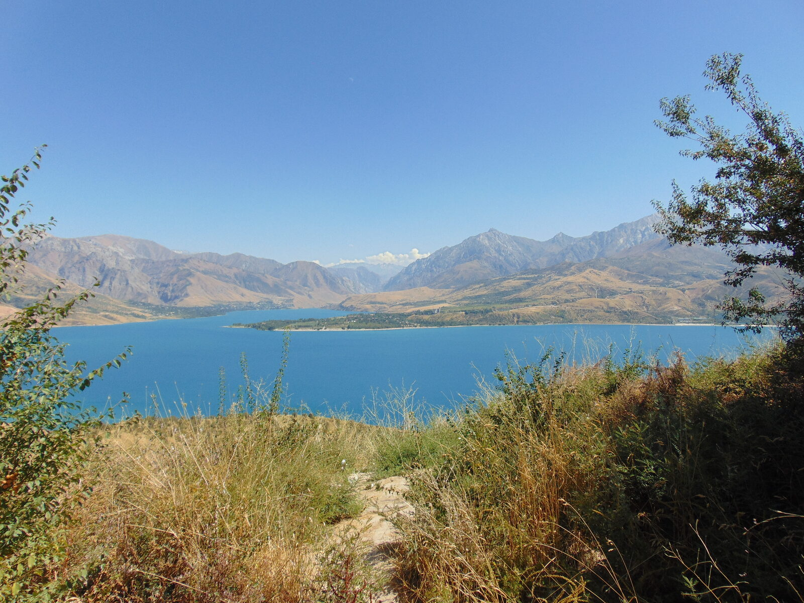

Индивидуальные и групповые туры с местными гидами, которые любят своё дело.
Это сердце древнего Шёлкового пути — и по-прежнему одно из величайших неоткрытых направлений мира. Вот почему те, кто здесь побывал, не могут перестать о нём рассказывать.
Самарканд примерно ровесник Рима. Веками караваны везли шёлк, специи и идеи между Китаем и Европой именно через эти города.
Самарканд, Бухара, Хива и Шахрисабз — живые города, по которым можно гулять, а не руины за ограждением.
Гражданам России и многих других стран (включая США — до 30 дней) не нужно оформлять визу. Просто покупайте билет и летите.
Деньги здесь тратятся очень неспешно. День с личным гидом часто обходится дешевле группового автобусного тура по Западной Европе.
Такой была Италия до массового туризма. Дворики в изразцах и горные смотровые площадки — почти только для вас.
Сегодня — голубые купола городов Шёлкового пути, завтра — заснеженные вершины Тянь-Шаня, водопады и виноградники. И всё это рядом с Ташкентом.
Родились и выросли здесь. Знаем каждый уголок.
Небольшие группы, живое общение, никакой спешки.
Не только памятники — погружение в культуру.
День в горах: солнечный научный комплекс, священная мечеть на высоте 1500 м, дегустация вина и настоящий горный обед.
Подробнее о туре →Древние петроглифы, канатная дорога, водопады, зороастрийские захоронения и обед в традиционной чайхане у водохранилища.
Подробнее о туре →Ташкент, Самарканд и Бухара с профессиональным гидом, комфортным транспортом и тщательно подобранными ресторанами и гостиницами.
Подробнее о туре →От древних городов Шёлкового пути до диких вершин Тянь-Шаня — Узбекистан удивит вас больше, чем вы ожидаете.
Мы — небольшая команда опытных местных гидов из Ташкента. Говорим на английском, русском и испанском и всей душой стараемся, чтобы каждый гость увидел настоящий Узбекистан.

21 год в профессии гида. Коренной ташкентец — гастрономия, культура и города Шёлкового пути.

От Ташкента до Самарканда, Бухары, Коканда и Тянь-Шаня.

Классические маршруты Шёлкового пути — и скрытые уголки вдали от туристических троп.

Снежные перевалы, лесистые склоны и каньоны Западного Тянь-Шаня.
В самом сердце Центральной Азии, на Шёлковом пути между Китаем и Европой — и добраться сюда проще, чем кажется.

Да. Путешественники неизменно удивляются, насколько здесь спокойно и безопасно: уличная преступность низкая, а гостеприимство — предмет национальной гордости. Как и перед любой поездкой, проверьте актуальные рекомендации для путешественников вашей страны, а гид будет рядом с вами всё время.
Граждане России и многих других стран (в том числе США — на срок до 30 дней) могут въехать в Узбекистан без визы. Нужен лишь паспорт, действительный на весь срок поездки. Правила могут меняться, поэтому перед вылетом проверьте актуальные требования для вашего паспорта — мы с радостью поможем.
Узбекистан находится в Центральной Азии, на древнем Шёлковом пути между Китаем и Европой, и граничит с Казахстаном, Кыргызстаном, Таджикистаном, Афганистаном и Туркменистаном. Из Москвы и других российских городов в Ташкент летают прямые рейсы, а из США обычно добираются с одной пересадкой — через Стамбул, Дубай или один из европейских хабов. Мы встретим вас в аэропорту.
Большинство жителей Узбекистана — мусульмане, но государство светское и очень открыто к гостям. Обычная повседневная одежда вполне подойдёт. При посещении мечетей и святых мест прикройте плечи и колени (женщинам может пригодиться лёгкий платок). Гид подскажет перед каждой остановкой.
В гостиницах и главных туристических местах — чаще всего да, в остальных местах — реже. Именно поэтому местный гид так много значит. Все наши гиды говорят по-английски, а некоторые — ещё и по-русски и по-испански.
Местная валюта — сум. Картой можно расплатиться в большинстве гостиниц и во многих ресторанах крупных городов, банкоматы найти несложно, но на базарах и в небольших сёлах — только наличные. Доллары США легко обменять.
Идеальное время — весна (с апреля по июнь) и осень (сентябрь–октябрь): тёплые дни, прохладные вечера, всё цветёт или созревает урожай. Летом в городах жарко, зато в горах прекрасно. Зимой на Тянь-Шане можно кататься на лыжах.
Конечно. Любой тур можно провести индивидуально, а маршрут мы составим под ваши интересы, даты и темп. Расскажите, чего вам хочется, — и в течение 24 часов мы пришлём план и цену.
Расскажите, когда вы приезжаете, что вам интересно и сколько человек в группе. Мы ответим в течение 24 часов.
Спланировать поездку